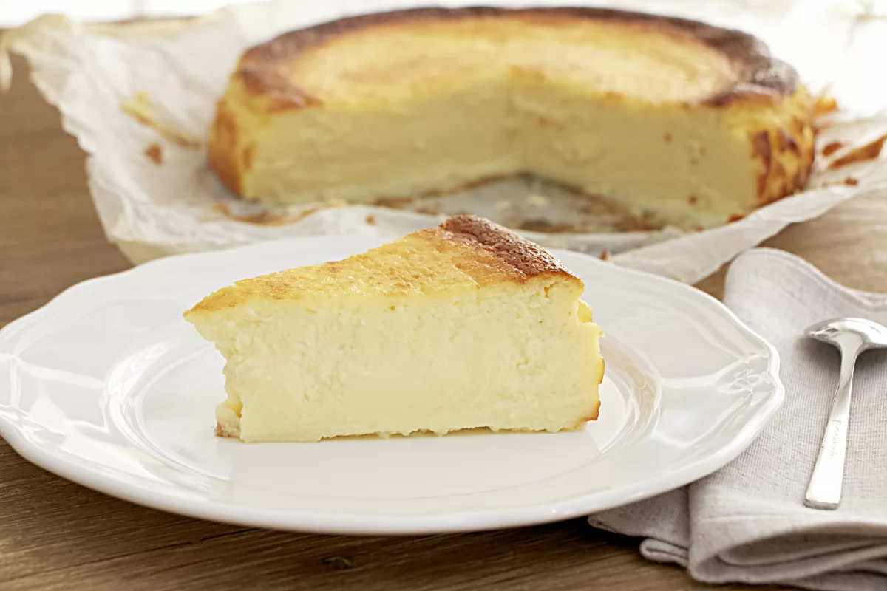
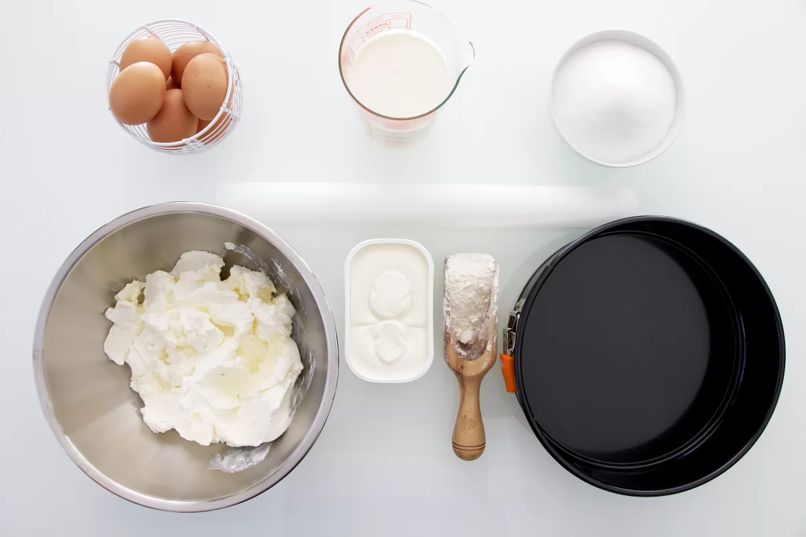
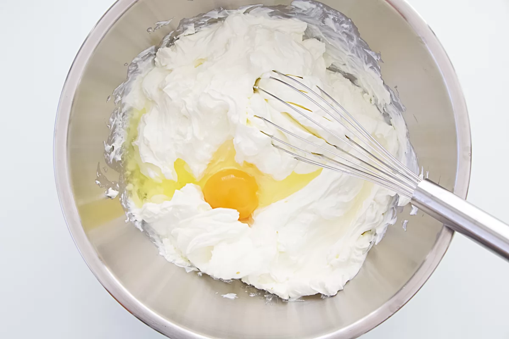
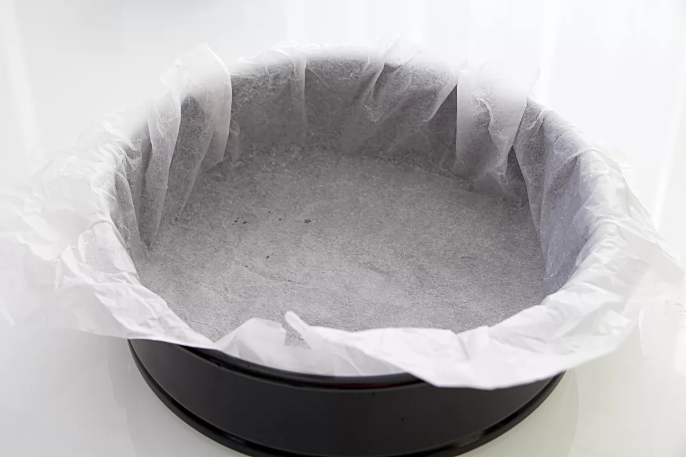
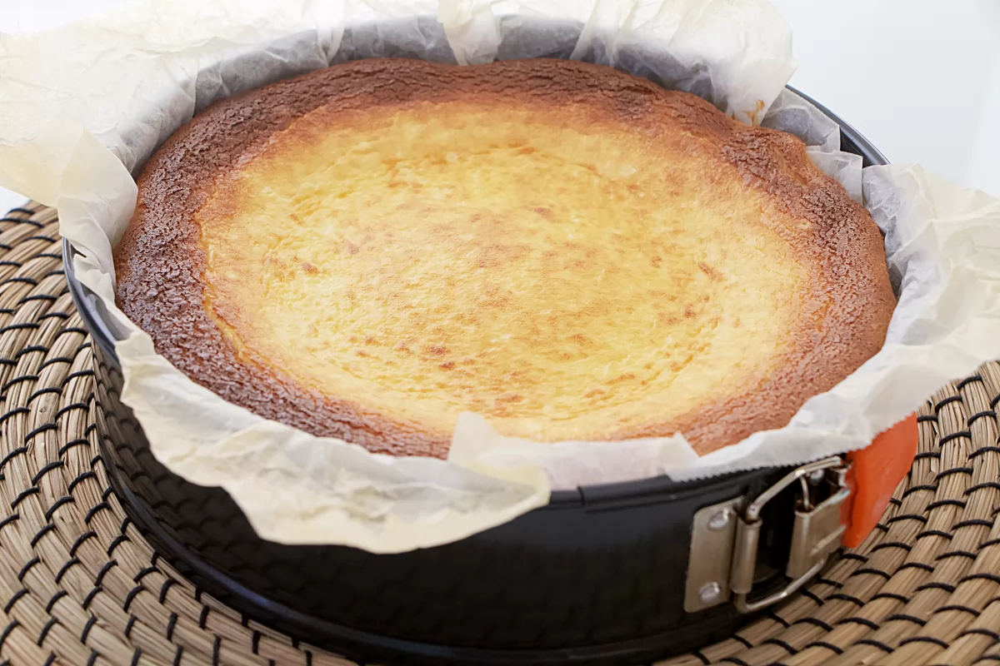

Receta de tarta de queso
Información de la receta
- Tiempo de preparación: 10 minutos
- Tiempo de cocinado 40 minutos
- Tiempo total: 50 minutos
- Raciones: 6
- Categoria: postre
- Tipo de cocina: española
- Calorias por racion (kcal): 550
Ingredientes de la tarta de queso La Viña
- 570 de queso cream (tipo Philadelphia)
- 4 huevos
- 230 g de azucar
- 10 g de harina
- 285 ml de nata (35% materia grasa)
Utensilios utilizados
- 1 molde desmontable de 18 cm de diámetro
- 1 lámina de papel vegetal apto para el horno
Cómo hacer tarta de queso La Viña
-

- En primer lugar, ponemos a precalentar el horno a 200 ºC. Ponemos 570 g de queso crema en un bol amplio y añadimos 4 huevos, de uno en uno.
- Removemos e integramos bien la mezcla con unas varillas, tras la adición de cada huevo.
- A continuación, añadimos 230 g azúcar y de nuevo homogeneizamos la mezcla con ayuda de nuestras varillas.
- Posteriormente, añadimos 10 g de harina y removemos nuevamente con las varillas, integrando la mezcla.
- Por último, añadimos 285 ml de nata y una vez más, removemos bien e integramos todos los ingredientes. 
- Una vez preparada la mezcla, arrugamos una lámina de papel vegetal para horno y la mojamos un poco para que nos resulte más fácil su colocación en el molde. Tras esto, estiramos la lámina con las manos, la sacudimos un poco para eliminar el exceso de agua y la colocamos sobre el molde.
- Vertemos la mezcla de queso en el molde con el papel vegetal ya colocado.
- Introducimos el molde en el horno a 200 ºC, con calor arriba y abajo, y sobre la rejilla del horno a una altura media-baja. Horneamos la durante 40 minutos, hasta que la superficie adquiera un característico tono dorado. Si antes de los 40 minutos vemos que nuestra tarta se está dorando en exceso, podemos cubrir la superficie con papel de aluminio para evitar que se queme mientras termina la cocción. Por el contrario, si llegados los 40 minutos nuestra tarta está completamente pálida, podemos poner el gratinador hasta que la superficie se dore.
- Pasado el tiempo correspondiente de cocción, sacamos el molde del horno. En este momento, podemos tener la sensación de que nuestra tarta no se ha cocido lo suficiente ya que al sacarla del horno la notaremos muy temblorosa y la parte central se hundirá ligeramente. Sin embargo, esto es completamente normal. Tras unas 2 horas de reposo fuera del horno, la tarta habrá adquirido la textura perfecta. Pasado el tiempo de reposo, desmoldamos retirando con cuidado el papel vegetal del contorno y servimos o conservamos en frío. ¡Ya solo nos queda disfrutar de esta delicia!

Referencia de donde he sacado la receta
Página de referencia: Referencia